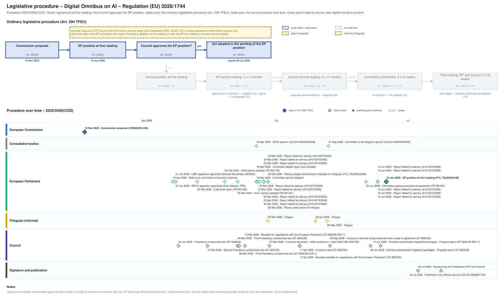

← Regulation timeline › Digital Omnibus on AI › Legislative procedure · All procedures
Procedure 2025/0359(COD), completed. Drawing: SVG · PNG · PDF (A3) · draw.io · Page as Markdown: digital-omnibus-ai.md
| Stage | Completed, published 24 Jul 2026 |
|---|---|
| Route (Art. 294 TFEU) | Agreement at first reading: the Council approved the EP position |
| Latest activity | 24 Jul 2026 · Signature and publication: Published in the Official Journal (CELEX 32026R1744) |

| Committee | Role | Rapporteur | Shadow rapporteurs |
|---|---|---|---|
| IMCO Internal Market and Consumer Protection | Responsible | Arba Kokalari (EPP), appointed 21 Jan 2026 | Brando Benifei (S&D), Virginie Joron (PfE), Piotr Müller (ECR), Svenja Hahn (Renew), Kim Van Sparrentak (Greens/EFA), Leila Chaibi (The Left) |
| LIBE Civil Liberties, Justice and Home Affairs | Responsible | Michael Mcnamara (Renew), appointed 21 Jan 2026 | Axel Voss (EPP), Kristian Vigenin (S&D), Jaroslav Bžoch (PfE), Assita Kanko (ECR), Markéta Gregorová (Greens/EFA), Pernando Barrena Arza (The Left), Mary Khan (ESN) |
| CULT Culture and Education | Opinion | Emma Rafowicz (S&D), appointed 20 Jan 2026 | Zoltán Tarr (EPP), Lara Magoni (ECR), Laurence Farreng (Renew), Zsuzsanna Borvendég (ESN) |
| ITRE Industry, Research and Energy | Opinion | not yet appointed | – |
| JURI Legal Affairs | Opinion | Sergey Lagodinsky (Greens/EFA), appointed 03 Dec 2025 | Laurence Farreng (Renew), Adrián Vázquez Lázara (EPP), José Cepeda (S&D), Ton Diepeveen (PfE), Tobiasz Bocheński (ECR) |
| TRAN Transport and Tourism | Opinion | Vivien Costanzo (S&D), appointed 21 Jan 2026 | Sophia Kircher (EPP), Kosma Złotowski (ECR), Oihane Agirregoitia Martínez (Renew), Jutta Paulus (Greens/EFA), Elena Kountoura (The Left) |
| BUDG Budgets | Budgetary assessment | not yet appointed | – |
Source: EP Open Data API (participations) and the Legislative Observatory (joint committee, opinions declined); names link to each Member's page on the EP website. The API names no committee for shadow rapporteurs; they are assigned by the EP's order of participants, which groups each committee.
| Date | Actor | Event | Document | Source |
|---|---|---|---|---|
| 2025-11-19 | European Commission | Commission proposal (Art. 294(2) TFEU) | COM(2025) 836 · en.md de.md | Cellar (CELEX 52025PC0836) |
| 2026-01-19 | European Parliament | Referral to committee announced in plenary | EP procedure file | EP Open Data API, procedure 2025-0359 (REFERRAL) |
| 2026-01-21 | European Parliament | IMCO rapporteur appointed (Arba Kokalari, PPE) | EP procedure file | EP Open Data API, procedure 2025-0359 (participation RAPPORTEUR) |
| 2026-01-21 | European Parliament | LIBE rapporteur appointed (Michael Mcnamara, RENEW) | EP procedure file | EP Open Data API, procedure 2025-0359 (participation RAPPORTEUR) |
| 2026-01-23 | Council | Presidency compromise text | ST 5638/26 | Cellar procedure file 2025/359 (Council register) |
| 2026-02-05 | European Parliament | CJ40 draft report | PE782.530 | EP Open Data API, procedure 2025-0359 (COMMITTEE_TABLING_REPORT) |
| 2026-02-12 | Council | Second Presidency compromise text | ST 6245/26 | Cellar procedure file 2025/359 (Council register) |
| 2026-02-24 | European Parliament | JURI opinion adopted | PE784.179 | EP Open Data API, procedure 2025-0359 (COMMITTEE_ADOPTING_OPINION) |
| 2026-03-05 | Council | Third Presidency compromise text | ST 6963/26 | Cellar procedure file 2025/359 (Council register) |
| 2026-03-05 | European Parliament | CULT opinion adopted | PE784.261 | EP Open Data API, procedure 2025-0359 (COMMITTEE_ADOPTING_OPINION) |
| 2026-03-06 | Council | Third Presidency compromise text | ST 6963/26 COR 1 | Cellar procedure file 2025/359 (Council register) |
| 2026-03-10 | Council | Mandate for negotiations with the European Parliament | ST 6969/26 REV 1 | Cellar procedure file 2025/359 (Council register) |
| 2026-03-18 | Consultative bodies | EESC opinion | CELEX 52025AE3929 | Cellar procedure file 2025/359 |
| 2026-03-18 | European Parliament | Committee opinion adopted | EP procedure file | EP Open Data API, procedure 2025-0359 (COMMITTEE_ADOPTING_OPINION) |
| 2026-03-18 | European Parliament | Committee adopts report and mandate | EP procedure file | EP Open Data API, procedure 2025-0359 (COMMITTEE_ADOPTING_REPORT) |
| 2026-03-19 | European Parliament | Report tabled for plenary | A10-0073/2026 | EP Open Data API, procedure 2025-0359 (TABLING_PLENARY) |
| 2026-03-20 | European Parliament | Report tabled for plenary | A10-0073/2026 | EP Open Data API, procedure 2025-0359 (TABLING_PLENARY) |
| 2026-03-23 | European Parliament | Report tabled for plenary | A10-0073/2026 | EP Open Data API, procedure 2025-0359 (TABLING_PLENARY) |
| 2026-03-23 | European Parliament | Report tabled for plenary | A10-0073/2026 | EP Open Data API, procedure 2025-0359 (TABLING_PLENARY) |
| 2026-03-23 | European Parliament | Report tabled for plenary | A10-0073/2026 | EP Open Data API, procedure 2025-0359 (TABLING_PLENARY) |
| 2026-03-23 | European Parliament | Report tabled for plenary | A10-0073/2026 | EP Open Data API, procedure 2025-0359 (TABLING_PLENARY) |
| 2026-03-23 | European Parliament | Report tabled for plenary | A10-0073/2026 | EP Open Data API, procedure 2025-0359 (TABLING_PLENARY) |
| 2026-03-26 | European Parliament | Plenary adopts amendments (mandate for trilogues) | P10_TA(2026)0098 | EP Open Data API, procedure 2025-0359 (PLENARY_AMEND) |
| 2026-03-26 | European Parliament | Report tabled for plenary | A10-0073/2026 | EP Open Data API, procedure 2025-0359 (TABLING_PLENARY) |
| 2026-03-26 | European Parliament | Plenary refers back for trilogues | EP procedure file | EP Open Data API, procedure 2025-0359 (PLENARY_REFER_COMMITTEE_INTERINSTITUTIONAL_NEGOTIATIONS) |
| 2026-03-26 | Trilogues (informal) | Trilogue | EP procedure file | EP Open Data API, procedure 2025-0359 (INTERINSTITUTIONAL_NEGOTIATION) |
| 2026-03-27 | Council | 4 column document – AGS meeting on 1 April 2026 | WK 4547/26 | Cellar procedure file 2025/359 (Council register) |
| 2026-04-17 | Council | 4-column table | ST 8253/26 | Cellar procedure file 2025/359 (Council register) |
| 2026-04-17 | Council | Revised mandate for negotiations with the European Parliament | ST 8260/26 | Cellar procedure file 2025/359 (Council register) |
| 2026-04-28 | Trilogues (informal) | Trilogue | EP procedure file | EP Open Data API, procedure 2025-0359 (INTERINSTITUTIONAL_NEGOTIATION) |
| 2026-05-06 | Trilogues (informal) | Trilogue | EP procedure file | EP Open Data API, procedure 2025-0359 (INTERINSTITUTIONAL_NEGOTIATION) |
| 2026-05-07 | Consultative bodies | Committee of the Regions opinion | CELEX 52025AR4240 | Cellar procedure file 2025/359 |
| 2026-05-08 | Council | Analysis of the final compromise text with a view to agreement | ST 9034/26 | Cellar procedure file 2025/359 (Council register) |
| 2026-06-02 | European Parliament | Committee approves provisional agreement | PE789.081 | EP Open Data API, procedure 2025-0359 (COMMITTEE_APPROVE_PROVISIONAL_AGREEMENT) |
| 2026-06-05 | Council | Omnibus simplification legislative packages - Progress report | ST 9834/26 | Cellar procedure file 2025/359 (Council register) |
| 2026-06-10 | European Parliament | Report tabled for plenary | A10-0073/2026 | EP Open Data API, procedure 2025-0359 (TABLING_PLENARY) |
| 2026-06-10 | European Parliament | Report tabled for plenary | A10-0073/2026 | EP Open Data API, procedure 2025-0359 (TABLING_PLENARY) |
| 2026-06-10 | European Parliament | Report tabled for plenary | A10-0073/2026 | EP Open Data API, procedure 2025-0359 (TABLING_PLENARY) |
| 2026-06-10 | European Parliament | Report tabled for plenary | A10-0073/2026 | EP Open Data API, procedure 2025-0359 (TABLING_PLENARY) |
| 2026-06-10 | European Parliament | Report tabled for plenary | A10-0073/2026 | EP Open Data API, procedure 2025-0359 (TABLING_PLENARY) |
| 2026-06-12 | Council | Omnibus simplification legislative packages - Progress report | ST 9834/26 REV 1 | Cellar procedure file 2025/359 (Council register) |
| 2026-06-16 | European Parliament | EP position at first reading (Art. 294(3) TFEU) | P10_TA(2026)0198 | EP Open Data API, procedure 2025-0359 (PLENARY_ADOPT_POSITION) |
| 2026-07-08 | Signature and publication | Signature by the Presidents of EP and Council | EP procedure file | EP Open Data API, procedure 2025-0359 (SIGNATURE) |
| 2026-07-24 | Signature and publication | Published in the Official Journal | CELEX 32026R1744 · en.md de.md | EP Open Data API, procedure 2025-0359 (PUBLICATION_OFFICIAL_JOURNAL) |
Every document the Council register, the EU database of the Parliament of Austria or the EP lists for the procedure, with its state: public documents link to the official file; documents that are not public link to their entry in the Austrian database where there is one (metadata only). Status: public; not public; not public, leak available (an unofficial copy is known to circulate outside the institutions; it is neither published nor quoted here). Released: when a document listed as not public was released, by the date of the Council's public PDF (a technical date) or else the day our daily check found it public.
| Date | Document | Kind | Subject | Status | Released | Text |
|---|---|---|---|---|---|---|
| 2025-11-20 | ST 15698/25 ADD 2 | council-transmission | COMMISSION STAFF WORKING DOCUMENT Accompanying the documents Proposal for a REGULATION OF THE EUROPEAN PARLIAMENT AND OF THE COUNCIL Amending Regulations (EU) … | public status unknown | – | – |
| 2025-11-20 | ST 15708/25 | council-transmission | Proposal for a REGULATION OF THE EUROPEAN PARLIAMENT AND OF THE COUNCIL amending Regulations (EU) 2024/1689 and (EU) 2018/1139 as regards the simplification of … | public status unknown | – | – |
| 2025-11-29 | WK 16524/25 | council-note | Digital Omnibus and Digital Omnibus on Artificial Intelligence (AI) - Comments from Austria and other Member States | public | – | – |
| 2025-12-01 | WK 16586/25 | council-note | Digital Omnibus – Presentation by the Commission (AGS on 1 December) | public | – | – |
| 2025-12-04 | ST 16131/25 REV 1 | council-note | Simplification a) 2025 Annual Overview Report b) Annual Progress Reports - Presentation by the Commission - Exchange of views | public status unknown | – | – |
| 2025-12-08 | WK 17004/25 | council-note | Digital Omnibus and Digital Omnibus on AI - Comments from Austria and other Member States | public | – | – |
| 2025-12-10 | WK 17059/25 | council-note | Presidency discussion note for the AGS on 15 December | public status unknown | – | – |
| 2025-12-16 | WK 17396/25 | council-note | Digital Omnibus on AI – Presentation by the Commission (AGS on 15 December) | public status unknown | – | – |
| 2025-12-19 | WK 17591/25 | council-note | Presidency discussion note for the AGS on 9 January 2026 | public status unknown | – | – |
| 2026-01-09 | WK 251/26 | council-note | Digital Omnibus on AI – Presentation by the Commission (AGS on 9 January 2026 ) | public status unknown | – | – |
| 2026-01-09 | WK 252/26 | council-note | Priorities and work programme of the Cyprus Presidency - Presentation by the Presidency (AGS on 9 January 2026) | public status unknown | – | – |
| 2026-01-23 | ST 5638/26 | council-compromise | Presidency compromise text | public | – | – |
| 2026-01-23 | WK 1027/26 | council-note | Digital Omnibus on AI – Explanatory note | public status unknown | – | – |
| 2026-02-05 | PE782.530 | ep-draft-report | DRAFT REPORT on the proposal for a regulation of the European Parliament and of the Council amending Regulations (EU) 2024/1689 and (EU) 2018/1139 as regards … | public | – | – |
| 2026-02-06 | ST 6057/26 | council-note | Optional consultation of the Committee of the Regions1 | public status unknown | – | – |
| 2026-02-12 | ST 6245/26 | council-compromise | Second Presidency compromise text | public | – | – |
| 2026-02-13 | WK 2384/26 | council-note | Explanatory note on the second Presidency compromise text – AGS on 18 February | public status unknown | – | – |
| 2026-02-14 | PE784.274 | ep-amendments | public status unknown | – | – | |
| 2026-02-14 | PE784.275 | ep-amendments | public status unknown | – | – | |
| 2026-02-14 | PE784.309 | ep-amendments | public status unknown | – | – | |
| 2026-02-23 | WK 17679/25 ADD 1 COR 1 | council-note | compiled comments (ddl 18/12) -CORRIGENDUM | public status unknown | – | – |
| 2026-02-23 | WK 17679/25 ADD 1 COR 2 | council-note | compiled comments (ddl 18/12) -CORRIGENDUM | public status unknown | – | – |
| 2026-02-23 | WK 17679/25 ADD 1 REV 1 | council-note | compiled comments (ddl 18/12) | public status unknown | – | – |
| 2026-02-26 | PE784.179 | ep-opinion | OPINION on the proposal for a regulation of the European Parliament and of the Council amending Regulations (EU) 2024/1689 and (EU) 2018/1139 as regards the … | public | – | – |
| 2026-03-05 | ST 6963/26 | council-compromise | Third Presidency compromise text | public | – | – |
| 2026-03-05 | WK 3257/26 | council-note | (Digital Omnibus on AI) - MS comments on the second Presidency compromise text - deadline 26 Feb. 2026 | public status unknown | – | – |
| 2026-03-05 | WK 3257/26 ADD 1 | council-note | (Digital Omnibus on AI) - MS comments on the second Presidency compromise text - deadline 26 Feb. 2026 - DE and IT (bis) | public status unknown | – | – |
| 2026-03-06 | PE784.261 | ep-opinion | OPINION on the proposal for a regulation of the European Parliament and of the Council amending Regulations (EU) 2024/1689 and (EU) 2018/1139 as regards the … | public | – | – |
| 2026-03-06 | ST 6963/26 COR 1 | council-compromise | Third Presidency compromise text | public | – | – |
| 2026-03-06 | WK 3257/26 ADD 2 | council-note | (Digital Omnibus on AI) - MS comments on the second Presidency compromise text - deadline 26 Feb. 2026 - BG | public status unknown | – | – |
| 2026-03-06 | WK 3432/26 REV 1 | council-note | Explanatory note on the third compromise text – AGS meeting on 9 March 2026 | public status unknown | – | – |
| 2026-03-10 | ST 6969/26 REV 1 | council-position | Mandate for negotiations with the European Parliament | public | – | – |
| 2026-03-11 | WK 3803/26 | council-note | Digital Omnibus on AI - MS compiled comments on the third Presidency compromise text - AGS meeting of 9 March 2026 | public status unknown | – | – |
| 2026-03-11 | WK 3803/26 ADD 1 | council-note | Digital Omnibus on AI - MS compiled comments on the third Presidency compromise text - AGS meeting of 9 March 2026 - additional comments FR & IT | public status unknown | – | – |
| 2026-03-17 | ST 7384/26 | council-transmission | European Central Bank/ ECB Opinion | public status unknown | – | – |
| 2026-03-18 | CELEX 52025AE3929 | opinion | Opinion of the European Economic and Social Committee a) Proposal for a Regulation of the European Parliament and of the Council amending Regulations (EU) … | public | – | – |
| 2026-03-19 | A10-0073/2026 | ep-report | REPORT on the proposal for a regulation of the European Parliament and of the Council amending Regulations (EU) 2024/1689 and (EU) 2018/1139 as regards the … | public | – | – |
| 2026-03-20 | A10-0073/2026 | ep-report | public status unknown | – | – | |
| 2026-03-23 | A10-0073/2026 | ep-report | public status unknown | – | – | |
| 2026-03-23 | A10-0073/2026 | ep-report | public status unknown | – | – | |
| 2026-03-23 | A10-0073/2026 | ep-report | public status unknown | – | – | |
| 2026-03-23 | A10-0073/2026 | ep-report | public status unknown | – | – | |
| 2026-03-23 | A10-0073/2026 | ep-report | public status unknown | – | – | |
| 2026-03-26 | A10-0073/2026 | ep-report | public status unknown | – | – | |
| 2026-03-26 | P10_TA(2026)0098 | ep-position | Simplification of the implementation of harmonised rules on artificial intelligence (Digital Omnibus on AI) | public | – | – |
| 2026-03-27 | WK 4547/26 | trilogue | 4 column document – AGS meeting on 1 April 2026 | public | – | – |
| 2026-04-17 | ST 8253/26 | trilogue | 4-column table | public | – | – |
| 2026-04-17 | ST 8260/26 | council-position | Revised mandate for negotiations with the European Parliament | public | – | – |
| 2026-04-24 | WK 5890/26 | council-note | Follow-up to the AGS of 24 April 2026 - Presentation of the European Central Bank | public status unknown | – | – |
| 2026-04-30 | ST 8689/26 | council-note | Preparation for the trilogue | public status unknown | – | – |
| 2026-05-07 | CELEX 52025AR4240 | opinion | Opinion of the European Committee of the Regions – Digital simplification and Data Union Strategy | public | – | – |
| 2026-05-08 | ST 9034/26 | agreed-text | Analysis of the final compromise text with a view to agreement | public | – | – |
| 2026-05-12 | PE 30/26 | council-note | REGULATION OF THE EUROPEAN PARLIAMENT AND OF THE COUNCIL amending Regulations (EU) 2024/1689, (EU) 2018/1139 and (EU) 2023/1230 as regards the simplification … | public status unknown | – | – |
| 2026-05-13 | PE789.081 | agreed-text | PROVISIONAL AGREEMENT RESULTING FROM INTERINSTITUTIONAL NEGOTIATIONS Proposal for a regulation Amending Regulations (EU) 2024/1689 and (EU) 2018/1139 as … | public | – | – |
| 2026-05-13 | ST 9247/26 | council-note | Letter sent to the European Parliament | public status unknown | – | – |
| 2026-06-05 | ST 9834/26 | council-progress-report | Omnibus simplification legislative packages - Progress report | public | – | – |
| 2026-06-10 | A10-0073/2026 | ep-report | public status unknown | – | – | |
| 2026-06-10 | A10-0073/2026 | ep-report | public status unknown | – | – | |
| 2026-06-10 | A10-0073/2026 | ep-report | public status unknown | – | – | |
| 2026-06-10 | A10-0073/2026 | ep-report | public status unknown | – | – | |
| 2026-06-10 | A10-0073/2026 | ep-report | public status unknown | – | – | |
| 2026-06-12 | ST 9834/26 REV 1 | council-progress-report | Omnibus simplification legislative packages - Progress report | public | – | – |
| 2026-06-16 | P10_TA(2026)0198 | ep-position | Simplification of the implementation of harmonised rules on artificial intelligence (Digital Omnibus on AI) | public | – | – |
| 2026-06-22 | ST 10752/26 | council-note | Draft REGULATION OF THE EUROPEAN PARLIAMENT AND OF THE COUNCIL amending Regulations (EU) 2024/1689, (EU) 2018/1139 and (EU) 2023/1230 as regards the … | public status unknown | – | – |
| 2026-06-22 | ST 10752/26 ADD 1 | council-note | Draft REGULATION OF THE EUROPEAN PARLIAMENT AND OF THE COUNCIL amending Regulations (EU) 2024/1689, (EU) 2018/1139 and (EU) 2023/1230 as regards the … | public status unknown | – | – |
| 2026-06-24 | ST 10752/26 ADD 2 | council-note | Draft REGULATION OF THE EUROPEAN PARLIAMENT AND OF THE COUNCIL amending Regulations (EU) 2024/1689, (EU) 2018/1139 and (EU) 2023/1230 as regards the … | public status unknown | – | – |
Unofficial Markdown conversions for reading, searching and project folders; only the official document is authentic. "Read" opens the rendered text on GitHub, where a link to a provision (#art-13, #rec-12, #annex-i) jumps to it.
| Date | Stage | Document | Markdown | Read |
|---|---|---|---|---|
| 2025-11-19 | com-proposal | CELEX 52025PC0836 | en de | GitHub |
| 2026-07-24 | oj | CELEX 32026R1744 | en de | GitHub |
| 2026-09-29 | corrigendum | CELEX 32026R1744R(01) | de | GitHub |